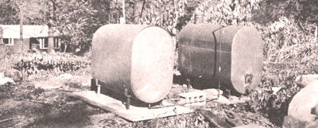

As this special section on alternative energy was completed, we received letters from Alton Eliason and Joe Pelliccio ... two energetic inventors who joined forces this past spring to build a methane generator of their own design in Al's backyard.
Well, we didn't have enough space left to go into all the details here-we'll do that in the next issue-but we thought you'd like to see and hear a little bit about what these knowledgeable blokes are up to.
It all started in March when Al and I met at an organic gardening club gathering-held to discuss the principles of methane production-in Madison, Connecticut.
Now I had the materials and the welding skill to construct a digester but no place to put it ... and Al (a gardening buff who wanted to use methane to heat a greenhouse through the winter) had the place but no materials. The two of us just naturally got together.
We built our plant from an ordinary 275-gallon fuel oil tank and, since we were undecided as to whether we wanted a batch- or continuous-feed digestion system, we planned a unit that could be loaded either way.
One major factor we kept in mind while designing the composting tank was our location. We figured that our low winter temperatures up here in the Northeast might really retard the digestion process (the anaerobic bacteria which produce methane work best when maintained at a constant temperature of 95°F).We didn't want to try to hold this level of warmth with a heated water jacket, however, because that approach seemed like a lot of extra work and added expense to us. Al and I finally decided that, since the greenhouse would be warmed to a steady temperature by burning the methane anyway, we'd just set the bio-gas plant right inside the building.
We began filling the tank during the second week in July and it started producing gas the first week of August. We had run a line from the digester into a bucket of water, figuring that bubbles would form in the liquid when the composter commenced making methane.
As soon as the expected bubbles appeared, we called a chemist friend to evaluate the vapor we were producing (we wanted to make sure it was really methane).Our expert's scientific test, as it turned out, was conducted pretty much the way any backyard technician would approach the assignment: He lit the escaping gas with a match and determined that, yep, we were generating an ignitable fuel. And of good quality. Success at last.
We're now storing our "homemade natural gas" in a second 275-gallon tank while we finish Al's greenhouse and look for a space heater in which to burn the fuel. We'd surely like to hear from other MOTHER readers interested in methane and/or additional alternative energy sources. We'll be pleased to exchange information and compare notes. Write to either Joe Pelliccio, 34 Sheldon Terrace, New Haven, Connecticut 06511 or Alton Eliason, Parsonage Hill, Northford, Connecticut 06472.
|
|
 |
|